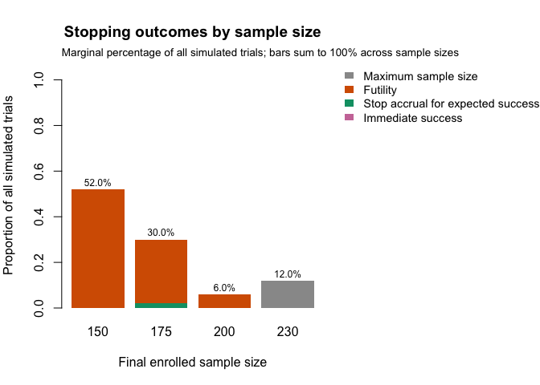
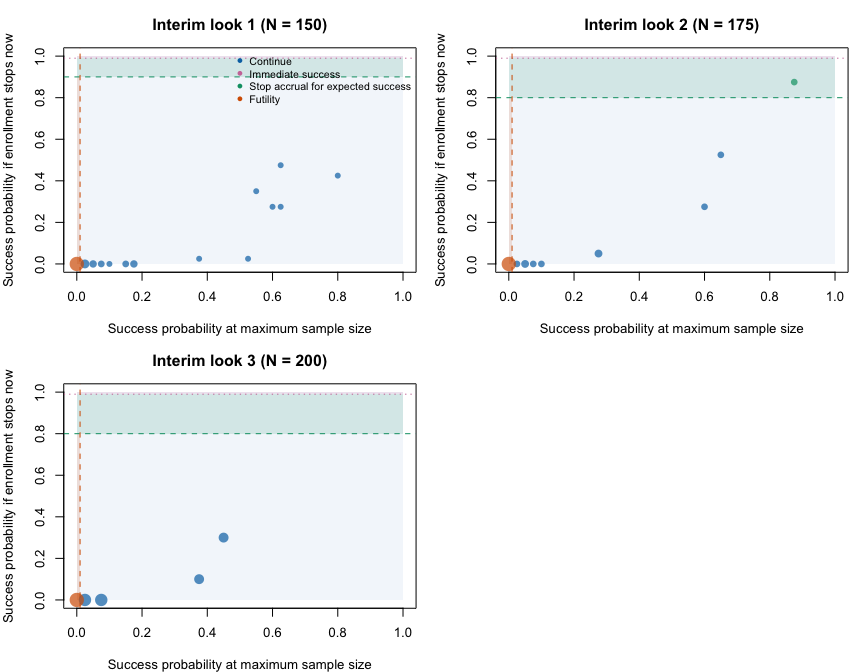

The ThermoCool AF trial is a useful published example of a Bayesian design that used the same predictive probability to distinguish between stopping accrual and declaring immediate trial success. The trial compared radiofrequency catheter ablation with antiarrhythmic drug therapy (ADT) in patients with symptomatic paroxysmal atrial fibrillation. It was registered as NCT00116428, reported by Wilber et al. (2010), and supported FDA premarket approval supplement P030031/S011.
This vignette uses the trial to explain Qn, the upper
boundary for immediate success in goldilocks. It is a
ThermoCool-inspired package example, not an exact reconstruction
or regulatory validation. JAMA and the public FDA record
disclose the principal decision boundaries and longitudinal imputation
model, but omit or redact the numerical operating-characteristic
scenarios. The trial designers subsequently published the default
failure-time generator, accrual schedule, and scenario grid in Berry et al. (2010, Section
5.8, pp. 241–246). This example uses those published defaults. The
complete regulatory sensitivity suite remains unavailable, and the
package rule deliberately differs from the trial protocol in its
futility statistic, comparison operators, and treatment of a separate
information gate for an early claim.
ThermoCool AF was a prospective, multicenter, randomized, unblinded trial. Patients were allocated within site in blocks of 11: seven to catheter ablation and four to ADT. The primary effectiveness endpoint was freedom from protocol-defined treatment failure during comparable nine-month evaluation periods. Treatment failure included documented symptomatic paroxysmal atrial fibrillation; the protocol also classified specified procedural, medication, and intolerance outcomes as failures.
The planned maximum sample size was 230. Decision-capable interim analyses were planned after 150, 175, and 200 accrued patients. Trial success was defined by
\[ \Pr(p_T > p_C \mid \mathcal D) \ge 0.98, \]
where \(p_T\) and \(p_C\) are the nine-month chronic-success probabilities in the ablation and ADT groups. The final posterior criterion was selected through simulation to control the one-sided type I error at no more than 0.025.
The trial began with a fixed-sample frequentist design and was
amended while accrual was underway. FDA’s advisory briefing reports that
the 106 patients already accrued were treated as a non-stopping look in
the operating-characteristic simulations, with a statistical penalty.
This historical feature is important to the reported calibration, but it
is not an actionable interim_look in the package example
below.
At a planned interim analysis, the trial calculated the predictive probability that the final posterior criterion would be met after currently enrolled patients completed follow-up. In package notation this is \(P_{n,\ell}\). The reported rules were:
The JAMA methods summarize the 0.99 rule as an immediate claim at an interim analysis. The FDA advisory materials provide an operational detail: after accrual stopped, the early-claim analysis was performed once either 4.5 months had elapsed or at least 50% of enrolled patients had complete effectiveness outcomes, whichever came first. The public record reports that this information condition was satisfied when the first analysis was performed.
In practice, the first planned 150-patient analysis occurred after 160 patients had been enrolled because of operational timing; 148 were in the effectiveness analysis. The predictive probability was greater than 0.999, 50% of enrollees had an effectiveness determination, and the trial declared early success. Seven more patients were enrolled before shutdown was completed, producing 167 randomized patients in the updated report.
goldilocks ruleThe package enhancement keeps predictive probability as the key interim statistic but uses the following ordered rule:
\[ d_\ell = \begin{cases} \text{immediate success}, & P_{n,\ell} > Q_\ell, \\ \text{stop accrual for expected success}, & S_\ell < P_{n,\ell} \le Q_\ell, \\ \text{binding futility}, & P_{n,\ell} \le S_\ell \text{ and } P_{n_{\max},\ell} < F_\ell, \\ \text{continue}, & \text{otherwise.} \end{cases} \]
Decision order matters. An immediate-success crossing is terminal
even if a futility boundary also appears crossed. Equality with
Qn does not declare immediate success, and equality with
Sn does not stop accrual for expected success.
Qn = 1 disables immediate-success stopping at a look
because a predictive probability cannot be strictly greater than one.
The package requires Sn <= Qn at every look; setting
them equal removes the expected-success interval at that look.
For the ThermoCool-inspired mapping, the threshold vectors are:
N_total <- 230
interim_look <- c(150, 175, 200)
Qn <- rep(0.99, length(interim_look))
Sn <- c(0.90, 0.80, 0.80)
Fn <- rep(0.01, length(interim_look))These values reproduce the reported numerical boundaries, but not
every protocol detail. The package uses strict upper-boundary
comparisons, whereas the publications describe “at least” 0.99, 0.90, or
0.80. More importantly, the package’s requested futility rule uses only
\(P_{n_{\max},\ell}<F_\ell\);
ThermoCool AF required both predictive probabilities below 0.01. The
package also evaluates Qn at each scheduled look without a
separate 4.5-month/50% information gate.
The labels in the following table are used consistently throughout the vignette:
| Input | Value | Status | Source and mapping |
|---|---|---|---|
N_total |
230 | reported | JAMA Statistical Methods and FDA advisory briefing |
interim_look |
150, 175, 200 | reported | JAMA Statistical Methods and FDA advisory briefing |
Qn |
0.99 at each look | reported | Reported early-claim boundary; package applies its strict > rule |
Sn |
0.90, 0.80, 0.80 | reported | Reported expected-success accrual boundaries |
Fn |
0.01 at each look | reported | Reported numeric futility boundary |
| Futility statistic | Package uses P[nmax,l] only | assumed | The requested enhancement differs from ThermoCool’s P[n,l] and P[nmax,l] rule |
| Early-claim information gate | Not represented | reported | FDA briefing and transcript report 4.5 months or 50% endpoint-complete |
| Non-stopping 106-patient look | Not represented as an actionable look | reported | FDA requested it after the mid-trial amendment; zero probability of stopping |
prob_ha |
0.98 | reported | Historical success was at least 0.98; the package classifies success using its strict > comparison |
method, alternative,
h0 |
bayes-bin, less, 0 | inferred | Failure is the modeled binary event, so benefit is a lower treatment failure probability |
prior_bin |
Beta(1, 1) in both arms | reported | FDA advisory transcript and sponsor briefing |
cutpoints,
generation_cutpoints, end_of_study |
0.5 and 2 months; 9-month horizon | reported | JAMA and FDA describe breaks at 2 weeks/0.5 months and 2 months |
| Sponsor predictive hazard prior | Three arm-specific piecewise rates with a hierarchical prior | reported | FDA briefing discloses Exp(rate = 1) priors on the Gamma hyperparameters, but not a directly reproducible fixed package prior |
prior_surv,
prior_surv_final |
Fixed Gamma(1, 1) approximation in each interval and arm | assumed | Assumed plug-in approximation that sets both Gamma hyperparameters to the mean, 1, of their disclosed Exp(rate = 1) hyperpriors; not the sponsor’s hierarchical prior |
block, rand_ratio |
11; control 4 : treatment 7 | reported | JAMA Study Design |
lambda, lambda_time |
2, 3, 5 patients/month; changes at months 2 and 4 | reported | Berry et al., Section 5.8, p. 245; default simulation accrual schedule |
| Failure-time generator | Base hazards 0.65, 0.161, 0.05/month, scaled to target success | reported | Berry et al., Section 5.8, pp. 244–245; common shape scaled to an arm-specific nine-month success probability |
| Worked benefit scenario | Treatment 0.45; control 0.20 chronic success | reported | One of the benefit cases in Berry et al., Table 5.19; selected for the worked example |
| Published OC scenario grid | Three null and eight benefit scenarios | reported | Berry et al., Tables 5.18–5.19 |
| Observed enrollment history | 11 after year 1; 53 after year 2; 160 at analysis; 167 at close | reported | FDA sponsor briefing; realized history retained only for comparison |
| Observed interval hazards | June 2008 failures divided by exposure within each interval | inferred | Derived from FDA SSED Table 8; descriptive observed-data rates, not planning assumptions |
| Complete regulatory sensitivity suite | Not publicly available in full | unavailable | The FDA briefing redacts its scenario table, and Berry et al. notes additional sensitivity simulations without enumerating all of them |
prop_loss |
0 in each arm | assumed | No random loss generator is reported for the published scenarios; observed exclusions are not equivalent to random censoring |
imputed_final |
TRUE | inferred | JAMA reports multiple imputation for incomplete outcomes; the available package analysis is an approximation |
N_impute |
100 for one trial; 40 for small OC simulations; 5,000 in validation template | assumed | The evaluated counts are run-time choices; Berry et al. reports 1,000 burn-in and 5,000 retained MCMC iterations, which are not identical to the package computation |
Evaluated N_trials |
50 per scenario | assumed | Illustrative choice; the sponsor briefing reports 10,000 trials per scenario, while Berry et al. reports 25,000 for its tabulated null simulations |
The completed endpoint is binary, but its status is learned over time. The trial predicted unknown nine-month outcomes with an arm-specific piecewise-exponential time-to-failure model. The three intervals were 0–0.5 months, 0.5–2 months, and 2–9 months. After imputation, a patient’s failure time was reduced to a binary chronic-failure indicator, and the completed-data analysis compared arm-specific success probabilities.
goldilocks represents this structure with
method = "bayes-bin" and
binary_imputation = "event-time". The package is
parameterized on event probability, so the code models chronic
failure rather than chronic success:
\[ p_{\text{failure}} = 1 - p_{\text{chronic success}}. \]
Consequently, superiority of ablation is encoded as
\[ \Pr(p_{T,\text{failure}} - p_{C,\text{failure}} < 0 \mid \mathcal D) > 0.98, \]
using alternative = "less" and h0 = 0.
Independent uniform priors on the published chronic-success
probabilities become the same independent Beta(1, 1) priors
after complementing to failure probabilities.
analysis_cutpoints_month <- c(0.5, 2)
effectiveness_horizon_month <- 9
prior_bin <- c(1, 1)
# Assumed plug-in approximation using the means of the disclosed Exp(1)
# hyperpriors; this is not the sponsor's hierarchical hazard prior.
prior_surv <- c(shape = 1, rate = 1)The fixed prior_surv above approximates the sponsor’s
analysis prior. It is separate from the true hazards used to generate
virtual trials when studying the design’s operating characteristics.
Berry et al. (2010, pp. 244–245) gives the default piecewise-exponential failure generator that was not enumerated in JAMA or the public FDA summaries. Its base monthly hazards are 0.65, 0.161, and 0.05. Over the three analysis intervals, these give nine-month chronic success of approximately 0.40:
\[ \exp\{-0.5(0.65)-1.5(0.161)-7(0.05)\} \approx 0.40. \]
For a target chronic-success probability \(p\), all three base hazards are multiplied by the same factor:
\[ \theta_j(p) = \theta_j^*\frac{\log(p)}{\log(0.40)}. \]
Thus, scenario probabilities change the overall failure level while preserving the shape of the failure-time distribution.
base_chronic_success <- 0.40
base_failure_hazard <- c(
`0--0.5` = 0.65,
`0.5--2` = 0.161,
`2--9` = 0.05
)
hazard_for_success <- function(p) {
stopifnot(length(p) == 1L, is.finite(p), p > 0, p < 1)
base_failure_hazard * log(p) / log(base_chronic_success)
}
published_scenarios <- data.frame(
Type = c(rep("Null", 3), rep("Benefit", 8)),
`Treatment chronic success` = c(
0.20, 0.40, 0.60,
0.30, 0.40, 0.45, 0.50, 0.50, 0.60, 0.65, 0.70
),
`Control chronic success` = c(
0.20, 0.40, 0.60,
0.20, 0.20, 0.20, 0.20, 0.40, 0.40, 0.40, 0.40
),
check.names = FALSE
)
knitr::kable(published_scenarios, digits = 2)| Type | Treatment chronic success | Control chronic success |
|---|---|---|
| Null | 0.20 | 0.2 |
| Null | 0.40 | 0.4 |
| Null | 0.60 | 0.6 |
| Benefit | 0.30 | 0.2 |
| Benefit | 0.40 | 0.2 |
| Benefit | 0.45 | 0.2 |
| Benefit | 0.50 | 0.2 |
| Benefit | 0.50 | 0.4 |
| Benefit | 0.60 | 0.4 |
| Benefit | 0.65 | 0.4 |
| Benefit | 0.70 | 0.4 |
Tables 5.18 and 5.19 of Berry et al. report the three null cases and eight benefit cases shown above. There was therefore no single treatment-control event-rate assumption. For the runnable example, we select the published 0.45-versus-0.20 chronic-success case, which the monograph discusses specifically:
worked_chronic_success <- c(treatment = 0.45, control = 0.20)
hazard_treatment <- hazard_for_success(worked_chronic_success["treatment"])
hazard_control <- hazard_for_success(worked_chronic_success["control"])
planning_hazards <- data.frame(
Arm = c("Catheter ablation", "ADT control"),
`Target nine-month chronic success` = unname(worked_chronic_success),
`Hazard 0--0.5 months` = c(hazard_treatment[1], hazard_control[1]),
`Hazard 0.5--2 months` = c(hazard_treatment[2], hazard_control[2]),
`Hazard 2--9 months` = c(hazard_treatment[3], hazard_control[3]),
check.names = FALSE
)
knitr::kable(planning_hazards, digits = 3)| Arm | Target nine-month chronic success | Hazard 0–0.5 months | Hazard 0.5–2 months | Hazard 2–9 months |
|---|---|---|---|---|
| Catheter ablation | 0.45 | 0.566 | 0.140 | 0.044 |
| ADT control | 0.20 | 1.142 | 0.283 | 0.088 |
The same source reports a default simulation accrual rate of two patients per month for the first two months, three per month for the next two months, and five per month from the fifth month onward (Berry et al., 2010, p. 245).
enrollment_rate_per_month <- c(
months_0_to_2 = 2,
months_2_to_4 = 3,
months_4_plus = 5
)
enrollment_rate_change_month <- c(2, 4)
data.frame(
`Trial-calendar interval` = c("0--2 months", "2--4 months", "4+ months"),
`Patients per month` = enrollment_rate_per_month,
check.names = FALSE
)
#> Trial-calendar interval Patients per month
#> months_0_to_2 0--2 months 2
#> months_2_to_4 2--4 months 3
#> months_4_plus 4+ months 5These are reported defaults for simulations of the amended adaptive
design. goldilocks maps the three rates to its piecewise
Poisson arrival process; the monograph reports the rate schedule but
does not specify enough operational detail to verify that its
enrollment-time generator was identical. They should not be interpreted
as the original 2004 fixed-design forecast: the adaptive proposal was
developed after accrual had begun and 106 patients were already
enrolled.
The FDA Summary of Safety and Effectiveness Data, Table 8, p. 13 reports June 2008 exposure and failure counts for the same three intervals. Dividing failures by exposure gives observed-data rates, not prospective design assumptions:
fda_interval_data <- data.frame(
arm = rep(c("treatment", "control"), each = 3),
interval = rep(c("0--0.5", "0.5--2", "2--9"), 2),
exposure_months = c(40.21, 104.17, 413.09, 23.27, 54.21, 90.46),
failures = c(26, 3, 7, 13, 14, 20)
)
fda_interval_data$hazard_per_month <- with(
fda_interval_data,
failures / exposure_months
)
knitr::kable(fda_interval_data, digits = 4)| arm | interval | exposure_months | failures | hazard_per_month |
|---|---|---|---|---|
| treatment | 0–0.5 | 40.21 | 26 | 0.6466 |
| treatment | 0.5–2 | 104.17 | 3 | 0.0288 |
| treatment | 2–9 | 413.09 | 7 | 0.0169 |
| control | 0–0.5 | 23.27 | 13 | 0.5587 |
| control | 0.5–2 | 54.21 | 14 | 0.2583 |
| control | 2–9 | 90.46 | 20 | 0.2211 |
observed_hazard_treatment <- subset(
fda_interval_data,
arm == "treatment"
)$hazard_per_month
observed_hazard_control <- subset(
fda_interval_data,
arm == "control"
)$hazard_per_monthThe planning and observed interval rates differ in shape as well as level:
hazard_comparison <- data.frame(
Interval = names(base_failure_hazard),
`Planning: treatment` = unname(hazard_treatment),
`Observed: treatment` = observed_hazard_treatment,
`Planning: control` = unname(hazard_control),
`Observed: control` = observed_hazard_control,
check.names = FALSE
)
knitr::kable(hazard_comparison, digits = 3)| Interval | Planning: treatment | Observed: treatment | Planning: control | Observed: control |
|---|---|---|---|---|
| 0–0.5 | 0.566 | 0.647 | 1.142 | 0.559 |
| 0.5–2 | 0.140 | 0.029 | 0.283 | 0.258 |
| 2–9 | 0.044 | 0.017 | 0.088 | 0.221 |
Inserting the observed rates into a continuous piecewise-exponential distribution gives a stronger treatment contrast than the selected planning case. The JAMA Kaplan–Meier estimates were also more favorable to ablation:
interval_length_month <- diff(c(
0,
analysis_cutpoints_month,
effectiveness_horizon_month
))
chronic_success_comparison <- data.frame(
Arm = c("Catheter ablation", "ADT control"),
`Published worked scenario` = unname(worked_chronic_success),
`Implied by observed FDA interval rates` = c(
exp(-sum(observed_hazard_treatment * interval_length_month)),
exp(-sum(observed_hazard_control * interval_length_month))
),
`JAMA Kaplan-Meier estimate` = c(0.66, 0.16),
`FDA SSED Kaplan-Meier estimate` = c(0.64, 0.16),
check.names = FALSE
)
knitr::kable(chronic_success_comparison, digits = 3)| Arm | Published worked scenario | Implied by observed FDA interval rates | JAMA Kaplan-Meier estimate | FDA SSED Kaplan-Meier estimate |
|---|---|---|---|---|
| Catheter ablation | 0.45 | 0.616 | 0.66 | 0.64 |
| ADT control | 0.20 | 0.109 | 0.16 | 0.16 |
The FDA-rate probabilities are descriptive approximations. They need not equal the Kaplan–Meier estimates because they insert raw interval rates into a continuous distribution without the sponsor’s posterior calculation, handling of time-zero failures, or analysis-population rules. The 0.66 and 0.64 ablation estimates are also source- and cutoff-specific rather than interchangeable: JAMA reports 0.66, whereas the FDA SSED reports 0.64.
The published accrual model also differs sharply from the early operational history reported in the FDA sponsor briefing, internal p. 128. Under the package convention that the first participant enrolls at time zero, the default simulation model expects about 51 participants by month 12 and 111 by month 24. The trial had only 11 and 53, respectively, before enrollment accelerated. It reached 160 at the September 2007 analysis and 167 when enrollment closed the following month:
expected_enrollment <- function(month) {
interval_time <- c(
min(month, 2),
max(min(month - 2, 2), 0),
max(month - 4, 0)
)
1 + sum(enrollment_rate_per_month * interval_time)
}
accrual_comparison <- data.frame(
Milestone = c(
"After year 1",
"After year 2",
"First planned analysis",
"Enrollment close"
),
`Approximate trial month` = c(12, 24, 35, 36),
`Reported cumulative enrollment` = c(11, 53, 160, 167),
`Expected under published simulation default` = vapply(
c(12, 24, 35, 36),
expected_enrollment,
numeric(1)
),
check.names = FALSE
)
knitr::kable(accrual_comparison, digits = 0)| Milestone | Approximate trial month | Reported cumulative enrollment | Expected under published simulation default |
|---|---|---|---|
| After year 1 | 12 | 11 | 51 |
| After year 2 | 24 | 53 | 111 |
| First planned analysis | 35 | 160 | 166 |
| Enrollment close | 36 | 167 | 171 |
For an observed-history sensitivity analysis based on the reported year-end totals, the corresponding piecewise average rates are:
observed_enrollment_rate_per_month <- c(
year_1 = (11 - 1) / 12,
year_2 = (53 - 11) / 12,
year_3 = (167 - 53) / 12
)
observed_enrollment_rate_change_month <- c(12, 24)
data.frame(
`Trial-calendar interval` = c(
"0--12 months",
"12--24 months",
"24--36 months"
),
`Observed-history patients per month` =
observed_enrollment_rate_per_month,
check.names = FALSE
)
#> Trial-calendar interval Observed-history patients per month
#> year_1 0--12 months 0.8333333
#> year_2 12--24 months 3.5000000
#> year_3 24--36 months 9.5000000The analysis-month values are approximate calendar offsets from the first enrollment in October 2004. Relative to the published 2, 3, and 5 per-month default, the observed-history reconstruction is approximately 0.83, 3.50, and 9.50 per month: much slower during the first two years and substantially faster late in the trial. The year-three rate uses the closing count of 167; 160 was the preceding decision-analysis count rather than the final enrollment total.
The following analysis simulates one trial replicate under the published 0.45-versus-0.20 benefit scenario and default accrual schedule. It uses only 100 predictive imputations for illustration. That is too few for regulatory calibration of boundaries as extreme as 0.99 and 0.01.
set.seed(1030236)
thermocool_trial <- survival_adapt(
hazard_treatment = hazard_treatment,
hazard_control = hazard_control,
cutpoints = analysis_cutpoints_month,
generation_cutpoints = analysis_cutpoints_month,
N_total = N_total,
lambda = enrollment_rate_per_month,
lambda_time = enrollment_rate_change_month,
interim_look = interim_look,
end_of_study = effectiveness_horizon_month,
prior_surv = prior_surv,
prior_surv_final = prior_surv,
prior_bin = prior_bin,
bin_method = "quadrature",
binary_imputation = "event-time",
block = 11,
rand_ratio = c(control = 4, treatment = 7),
prop_loss = 0,
alternative = "less",
h0 = 0,
Fn = Fn,
Sn = Sn,
Qn = Qn,
prob_ha = 0.98,
N_impute = 100,
empty_interval = "prior",
method = "bayes-bin",
imputed_final = TRUE,
return_trace = TRUE
)
knitr::kable(
thermocool_trial$summary[, c(
"N_enrolled",
"ppp_success",
"stop_immediate_success",
"stop_expected_success",
"stop_futility",
"trial_success",
"stopping_reason",
"decision_time"
)],
digits = 3,
col.names = c(
"Enrolled N", "Predictive success", "Immediate success stop",
"Expected success stop", "Futility stop", "Trial success",
"Stopping reason", "Decision time"
)
)| Enrolled N | Predictive success | Immediate success stop | Expected success stop | Futility stop | Trial success | Stopping reason | Decision time |
|---|---|---|---|---|---|---|---|
| 150 | 1 | 1 | 0 | 0 | TRUE | immediate_success | 31.56 |
stop_immediate_success is an official terminal success
decision. It does not wait for a later completed-follow-up analysis, so
post_prob_ha and the final effect estimate are
NA. Binding futility is likewise an official terminal
failure. For compatibility, the package still attempts its historical
completed-follow-up diagnostic after futility; if that diagnostic cannot
be computed, post_prob_ha and est_final are
NA and trial_success remains
FALSE.
The trace makes the ordered rule auditable:
knitr::kable(
thermocool_trial$trace[, c(
"look",
"planned_N",
"ppp_stop_now",
"immediate_success_threshold",
"success_threshold",
"ppp_success_at_max",
"futility_threshold",
"decision"
)],
digits = 3,
col.names = c(
"Look", "Planned N", "PPSn", "Immediate success cut",
"Expected success cut", "PPSmax", "Futility cut", "Decision"
)
)| Look | Planned N | PPSn | Immediate success cut | Expected success cut | PPSmax | Futility cut | Decision |
|---|---|---|---|---|---|---|---|
| 1 | 150 | 1 | 0.99 | 0.9 | 1 | 0.01 | stop_immediate_success |
Here, PPSn is ppp_stop_now, PPSmax is
ppp_success_at_max, and the three cut columns show the
immediate-success, expected-success, and futility thresholds. Only looks
actually reached appear in the trace. An immediate-success decision
prevents all subsequent looks.
For simulation, collect common inputs in a named list and vary only the data-generating hazards. The first scenario is the published 0.45-versus-0.20 benefit case. The second assigns the 0.20-success control profile to both arms, which is one of the published null cases.
thermocool_design <- list(
cutpoints = analysis_cutpoints_month,
generation_cutpoints = analysis_cutpoints_month,
N_total = N_total,
lambda = enrollment_rate_per_month,
lambda_time = enrollment_rate_change_month,
interim_look = interim_look,
end_of_study = effectiveness_horizon_month,
prior_surv = prior_surv,
prior_surv_final = prior_surv,
prior_bin = prior_bin,
bin_method = "quadrature",
binary_imputation = "event-time",
block = 11,
rand_ratio = c(control = 4, treatment = 7),
prop_loss = 0,
alternative = "less",
h0 = 0,
Fn = Fn,
Sn = Sn,
Qn = Qn,
prob_ha = 0.98,
N_impute = 40,
empty_interval = "prior",
method = "bayes-bin",
imputed_final = TRUE,
N_trials = 50,
ncores = 2,
return_trace = TRUE
)
thermocool_benefit <- do.call(sim_trials, c(
thermocool_design,
list(
hazard_treatment = hazard_treatment,
hazard_control = hazard_control,
seed = 1030236
)
))
thermocool_null <- do.call(sim_trials, c(
thermocool_design,
list(
hazard_treatment = hazard_control,
hazard_control = hazard_control,
seed = 1030237
)
))
oc_small <- summarise_sims(list(
"Published benefit: 0.45 vs 0.20" = thermocool_benefit,
"Published null: 0.20 vs 0.20" = thermocool_null
))
oc_display <- oc_small[, c(
"scenario",
"n_analyzed",
"power",
"stop_immediate_success",
"stop_success",
"stop_futility",
"stop_max_N",
"mean_N"
)]
names(oc_display)[names(oc_display) == "stop_success"] <-
"stop_expected_success"
knitr::kable(
oc_display,
digits = 3,
col.names = c(
"Scenario", "Trials analyzed", "Power", "Immediate success stop",
"Expected success stop", "Futility stop", "Maximum N", "Mean N"
)
)| Scenario | Trials analyzed | Power | Immediate success stop | Expected success stop | Futility stop | Maximum N | Mean N |
|---|---|---|---|---|---|---|---|
| Published benefit: 0.45 vs 0.20 | 50 | 0.94 | 0.68 | 0.16 | 0.02 | 0.14 | 165.7 |
| Published null: 0.20 vs 0.20 | 50 | 0.00 | 0.00 | 0.02 | 0.86 | 0.12 | 170.1 |
With only 50 trials and 40 imputations per look, these estimates have
substantial Monte Carlo error. They illustrate the mutually exclusive
stopping categories; they do not estimate the trial’s reported operating
characteristics. summarise_sims() uses
stop_success for stopping accrual for expected success and
reports immediate success separately as
stop_immediate_success.
The no-effect scenario provides a useful view of all four decision regions:


In a decision plot, Qn adds a second horizontal boundary
above Sn. Observations above Qn are immediate
successes. Observations between Sn and Qn stop
accrual for expected success. At or below Sn,
Fn separates binding futility from continued accrual.
A design that permits immediate declaration of success must be
calibrated as a whole. Neither Qn = 0.99 nor
prob_ha = 0.98 automatically controls type I error in a new
design. Calibration must reflect all looks, the final analysis, the
binding futility rule, accrual, incomplete follow-up, the predictive
model, and Monte Carlo error.
The following unevaluated template increases both the number of simulated trials and the predictive-imputation count. Its 5,000 predictive draws are the closest package analogue to the 5,000 retained iterations described by Berry et al.; the package does not reproduce the sponsor’s hierarchical sampler or its 1,000-iteration burn-in. The 25,000 trial replicates match the count stated for Berry et al.’s null table; the sponsor briefing instead describes 10,000 trials per scenario, and the monograph does not state a replicate count for its benefit table.
thermocool_full_design <- modifyList(thermocool_design, list(
N_trials = 25000,
N_impute = 5000,
ncores = 8,
return_trace = FALSE
))
q_grid <- c(0.975, 0.99, 0.995, 1.00)
full_null <- lapply(seq_along(q_grid), function(i) {
do.call(sim_trials, c(
modifyList(thermocool_full_design, list(Qn = q_grid[i])),
list(
hazard_treatment = hazard_control,
hazard_control = hazard_control,
seed = 1031000 + i
)
))
})
names(full_null) <- paste0("null 0.20 vs 0.20: Qn = ", q_grid)
full_benefit <- lapply(seq_along(q_grid), function(i) {
do.call(sim_trials, c(
modifyList(thermocool_full_design, list(Qn = q_grid[i])),
list(
hazard_treatment = hazard_treatment,
hazard_control = hazard_control,
seed = 1032000 + i
)
))
})
names(full_benefit) <- paste0("benefit 0.45 vs 0.20: Qn = ", q_grid)
full_oc <- summarise_sims(c(full_null, full_benefit))
full_oc[, c(
"scenario",
"n_analyzed",
"power",
"power_mcse",
"stop_immediate_success",
"stop_immediate_success_mcse",
"stop_success",
"stop_futility",
"stop_max_N",
"mean_N",
"mean_N_mcse"
)]Useful additional scenarios include weaker treatment effects,
different control event rates, slower and faster accrual, arm-specific
missingness, alternative piecewise hazards, and violations of the
predictive model. The three published null cases and eight benefit cases
in published_scenarios provide a natural starting grid. The
null design should still be evaluated over a suitable nuisance-parameter
range rather than at a single equal-arm profile. Because a 0.99 boundary
is estimated from imputations, the predictive draw count should also be
chosen so that decisions near Qn, Sn, and
Fn are sufficiently stable.
The example preserves the central statistical idea:
Qn declares success immediately, whereas
Sn only stops accrual;Fn acts on predictive success at the maximum sample
size; andIt uses the published default failure generator, accrual schedule, and one published benefit scenario, but it does not reproduce the sponsor’s complete analysis, hierarchical hazard prior, confidential sensitivity suite, treatment-specific evaluation-window origins, site-stratified randomization sequences, protocol deviations, crossover, analysis-population exclusions, operational overrun, or the original two-predictive-probability futility requirement. It also does not recreate the mid-trial design amendment or its statistical penalty. Those distinctions are why the simulated numerical results should not be compared directly with the trial’s regulatory analysis.
Berry SM, Carlin BP, Lee JJ, Müller P. Bayesian Adaptive Methods for Clinical Trials. Boca Raton, FL: Chapman & Hall/CRC; 2010. Section 5.8, “Case study: Ablation device to treat atrial fibrillation,” pp. 241–246. This designer-authored case study supplies the default failure-time generator, its probability-scaling formula, the default accrual schedule, and the published operating-characteristic scenario grid used in this vignette.
Wilber DJ, Pappone C, Neuzil P, et al. Comparison of antiarrhythmic drug therapy and radiofrequency catheter ablation in patients with paroxysmal atrial fibrillation: a randomized controlled trial. JAMA. 2010;303(4):333-340. doi:10.1001/jama.2009.2029. The article reports the analysis boundaries and observed Kaplan–Meier results, but not the numerical simulation generator or accrual schedule.
U.S. Food and Drug Administration. Summary of Safety and Effectiveness Data, PMA P030031/S011. Table 8, p. 13 reports the June 2008 interval exposure and failures used above as observed-data comparisons, not planning assumptions.
U.S. Food and Drug Administration. Circulatory System Devices Panel, November 20, 2008 meeting materials. This is the archive landing page for the FDA and sponsor summaries, slides, panel questions, and transcript.
U.S. Food and Drug Administration. FDA Executive Summary, pp. 10–12. It documents the amendment, 106-patient non-stopping look, information gate, stopping rules, and hierarchical longitudinal model.
Biosense Webster, Inc. Sponsor Executive Summary. Internal pp. 24–25 and 128 report the simulation exercise and realized enrollment history. The briefing says that 10,000 trials per scenario were simulated, but its operating-characteristic table is redacted. Berry et al. later reports 25,000 simulations specifically for its tabulated null cases.
U.S. Food and Drug Administration. PMA supplement P030031/S011 approval record. FDA issued the decision on February 6, 2009 for the expanded paroxysmal atrial-fibrillation indication.